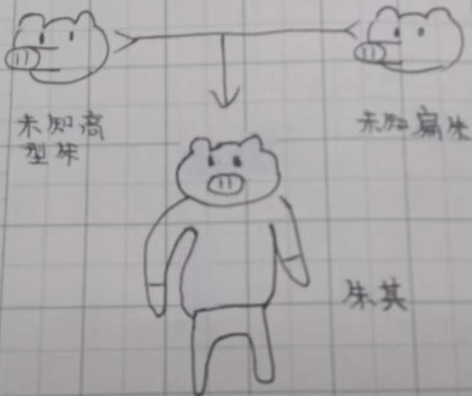

等级:main(locked)
朱其DNA检测
DNA报告
血 : 100%
源头DNA量 : 2DNA (99.99%)
DNA检测类型 : 扁朱、高型朱（非正种类）
扁朱DNA : 47.63%----\
高型朱DNA : 48.12%--|--→(未知类)
朱(原始)DNA : 4.25%--/
等级:main(locked)
(随身物)玄镜
有时会出现此物件，但大多数活跃去，期间或休眠状态不会出现。
攻击性:中强
吨位进攻(进攻方式)
未知武器(进攻器具、刀具组装后形成)
等级:tall-(locked)
(02续)
在活动区可能攻击性增加 ( 中强→强 )
易从红带至蓝带休息
在休息区内有45%概率休息
等级:midden+
质量: 大
体型: 大
高度: 中大
种类: 高型扁*朱、棕类
恐惧物件:双笔
等级:tall+(locked)